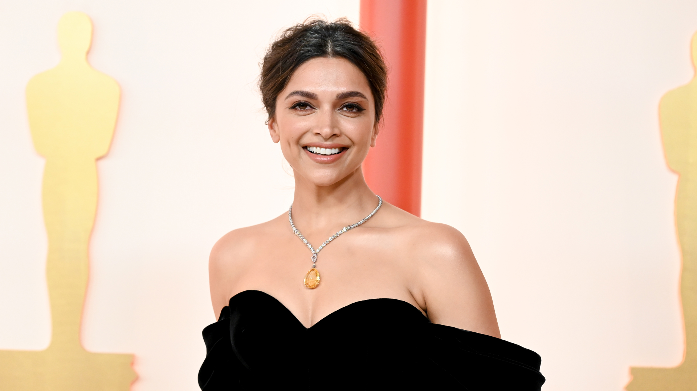
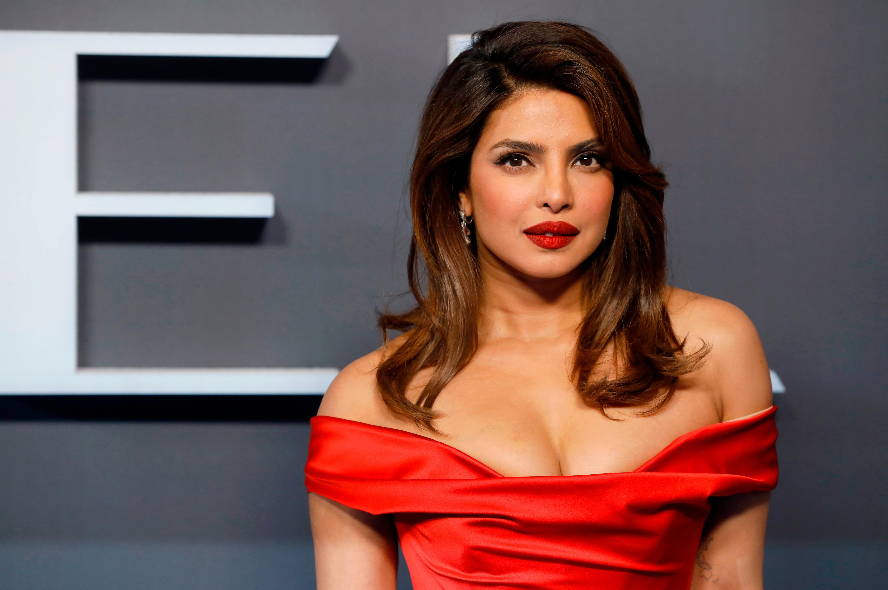

Deepika Prakash Padukone (pronounced [deepika padukone]; born 5 January 1986) is an Indian actress who works predominantly in Hindi films. One of India's highest-paid actress,[1] Padukone's accolades include three Filmfare Awards. Time named her one of the 100 most influential people in the world in 2018 and awarded her the Time100 Impact Award in 2022. Padukone, the daughter of the badminton player Prakash Padukone, was born in Copenhagen and raised in Bangalore. As a teenager, she played badminton in national level championships but left her career in the sport to become a fashion model. She soon received offers for film roles and made her acting debut in 2006 as the title character of the Kannada film Aishwarya. Padukone then played a dual role opposite Shah Rukh Khan in her first Bollywood release, the romance Om Shanti Om (2007), which won her the Filmfare Award for Best Female Debut. Padukone received praise for her starring role in the romance Love Aaj Kal (2009), but this was followed by a brief setback.

Priyanka Chopra Jonas (née Chopra; born 18 July 1982) is an Indian actress, film producer and singer. The winner of the Miss World 2000 pageant, she is India's highest-paid actress and her accolades include two National Film Awards and five Filmfare Awards. In 2016, the Government of India honoured her with the Padma Shri, and Time named her one of the 100 most influential people in the world. Forbes listed her among the World's 100 Most Powerful Women, and in 2022, she was named in the BBC 100 Women list. Chopra accepted offers to join the Indian film industry following her pageant wins. Her acting debut came in the Tamil film Thamizhan (2002), followed by her Bollywood debut in The Hero: Love Story of a Spy (2003). She played the leading lady in the box-office hits Andaaz (2003) and Mujhse Shaadi Karogi (2004) and had her breakout role in the 2004 romantic thriller Aitraaz. Chopra established herself with starring roles in the top-grossing productions Krrish and Don (both 2006), and later reprised her role in their successful sequels Krrish 3 (2013) and Don 2 (2011). For playing a troubled model in the drama Fashion (2008), Chopra won a National Film Award and a Filmfare Award for Best Actress. Chopra gained further praise for portraying a range of characters in the films Kaminey (2009), 7 Khoon Maaf (2011), Barfi! (2012), Mary Kom (2014), Dil Dhadakne Do (2015), and Bajirao Mastani (2015).